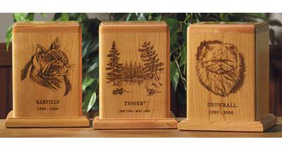

The death of a beloved pet is a very difficult and stressful time for you and your family.
We understand what you are going through as many of us have been down the same road before. We are here to help you cope through this difficult time.
Our pets have become such an important part of our lives and they bring such joy, love and happiness to us daily.
When the time comes to say goodbye, it is the least that we can do to ensure that they "go" in a peaceful and loving manner.

We have various products and services to suit the different needs, lifestyles and preferences you may have for your pet's final goodbye.
All our products are handcrafted locally from sustainable resources, which ensure that the money goes back to the local community.
Perhaps you would like to...
We are open to suggestions and new ideas of how we can better help YOU during this time.
If you have any questions or feedback, please call 0408 295 399 or email us at enquiries@fureverfriends.org to talk to our friendly staff.